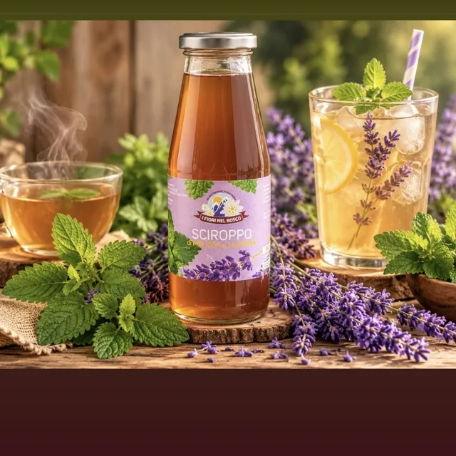
Melissa e lavandaSciroppo Melissa e Lavanda
Uno sciroppo delicato ma molto profumato, al gusto di melissa e lavanda.
Ingredienti e uso
Come si usa. Da diluire in acqua fredda o calda, a piacimento.
Piccola azienda agricola nelle Giudicarie: sciroppi, tisane, pesti e sali con le piante officinali del nostro orto di montagna.
Come si ordina. Scegli i prodotti: il carrello prepara il messaggio e lo apre su WhatsApp. Lì ci accordiamo su pagamento (bonifico, PayPal o contrassegno) e spedizione col corriere.
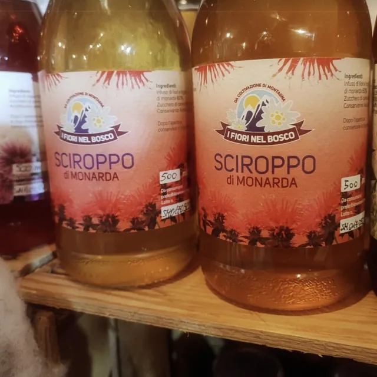
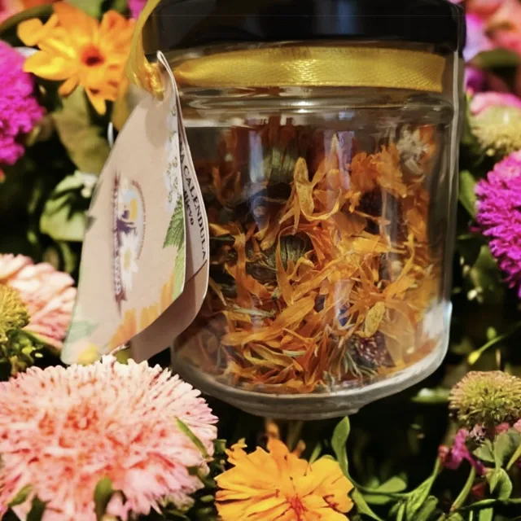
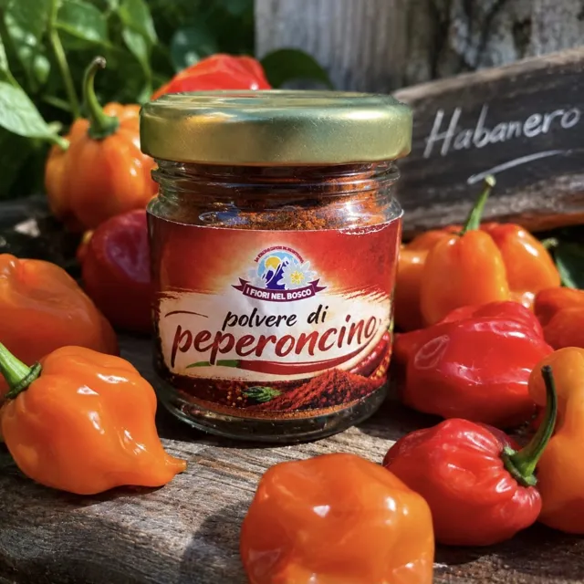
da diluire in acqua fredda o calda

Melissa e lavandaUno sciroppo delicato ma molto profumato, al gusto di melissa e lavanda.
Come si usa. Da diluire in acqua fredda o calda, a piacimento.
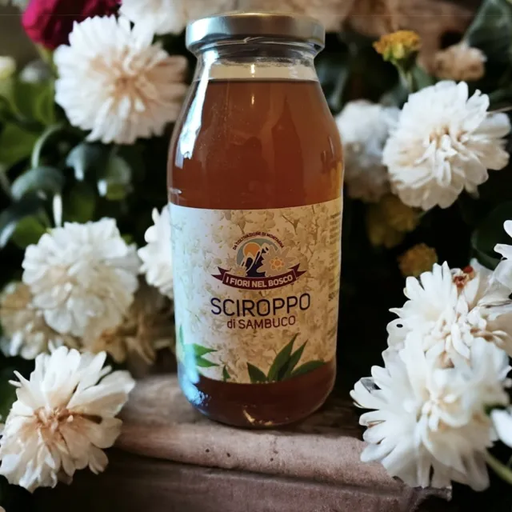
SambucoMolto profumato e dissetante, ideale nelle giornate estive molto calde.
Come si usa. Un cucchiaio di sciroppo in un bicchiere d'acqua calda o fredda.
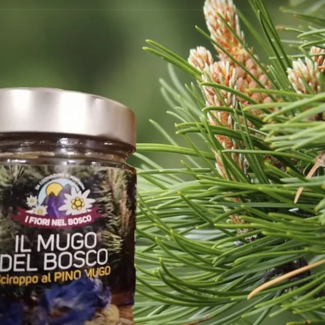
Pino mugoLe gemme di pino mugo in uno sciroppo dal profumo balsamico di bosco.
Ingredienti. infuso di gemme di pino mugo, sciroppo di mais, zucchero di canna (dall'etichetta: da confermare)
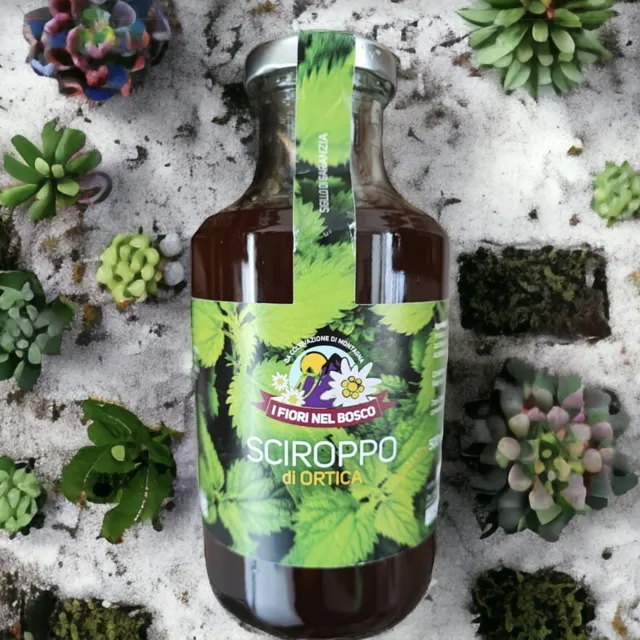
OrticaDal gusto deciso e molto profumato.
Come si usa. Da diluire in acqua fredda o calda.
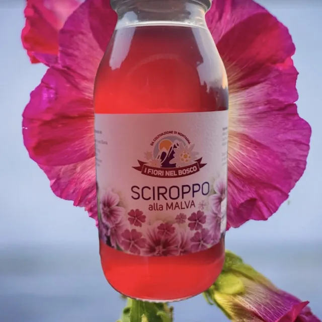
MalvaUno sciroppo delicato ma molto profumato: la malva ha un gusto molto fiorito.
Ingredienti. infuso di fiori di malva, zucchero di canna bio
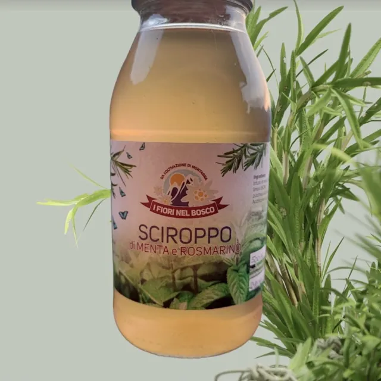
Menta e rosmarinoFresco grazie alla menta e molto aromatico grazie al rosmarino.
Ingredienti. infuso di menta e rosmarino, zucchero di canna bio, limone; acidificante: acido citrico
La monarda, chiamata anche finto bergamotto, ha un sapore agrumato, un po' limonato.
Come si usa. Da diluire in acqua fredda o calda, a piacimento.
fiori e foglie essiccati
Petali di calendula da infusione, o da usare in cucina come fiori eduli.
Come si usa. Portare a ebollizione l'acqua, spegnere il fuoco e aggiungere i fiori.
6,00 €
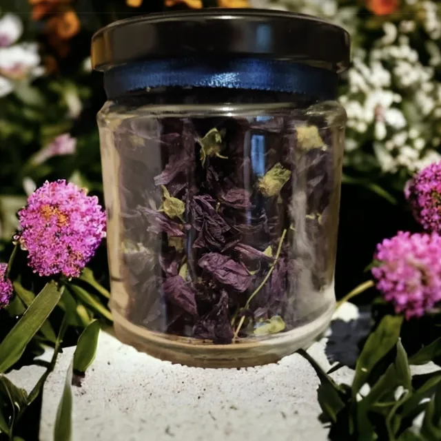
MalvaFiori di malva da infusione, o da usare in cucina come fiori eduli.
Come si usa. Portare a ebollizione l'acqua, spegnere il fuoco e aggiungere i fiori.
6,00 €
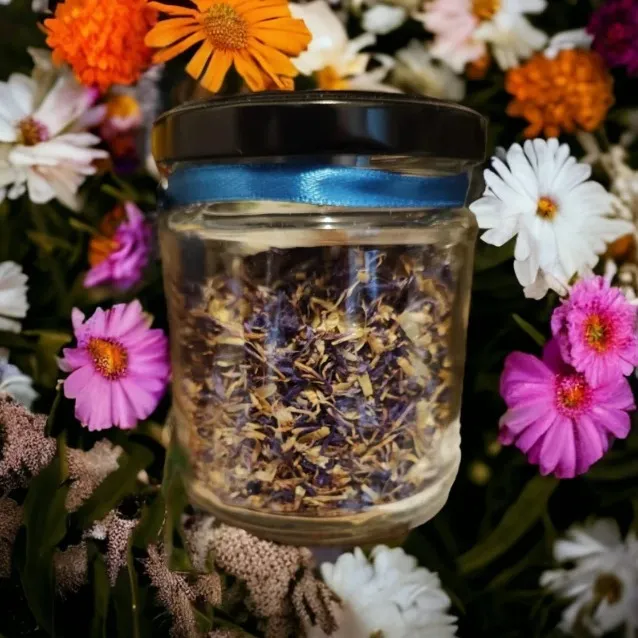
FiordalisoFiori di fiordaliso da infusione, o da usare in cucina come fiori eduli.
Come si usa. Portare a ebollizione l'acqua, spegnere il fuoco e aggiungere i fiori.
6,00 €
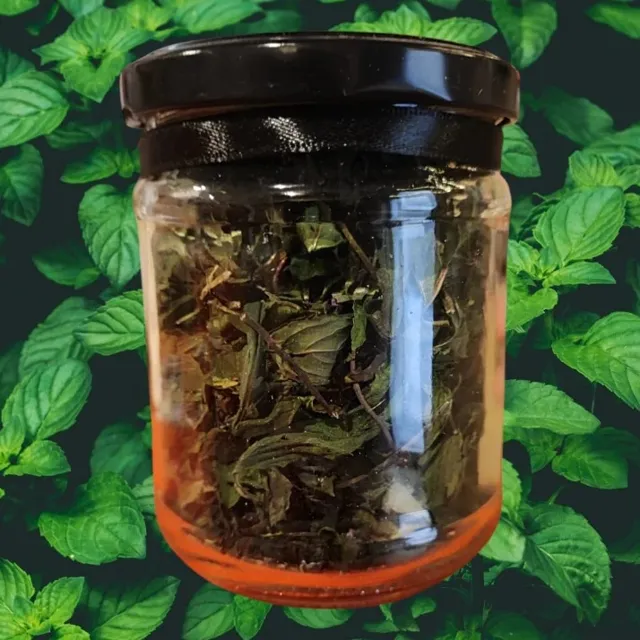
MentaFoglie di menta essiccate, da infusione.
Come si usa. Portare a ebollizione l'acqua, spegnere il fuoco e aggiungere le foglie.
6,00 €
per la pasta e per il pane
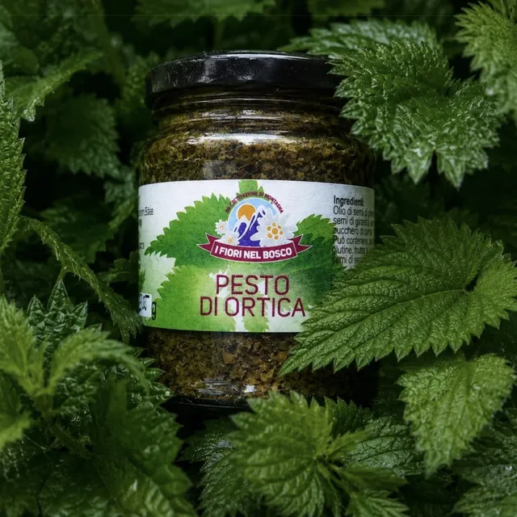
OrticaOttimo per primi piatti come pasta e riso, e spalmato su pane croccante.
Ingredienti. olio di semi di girasole, ortica… (da completare dall'etichetta)
5,50 €
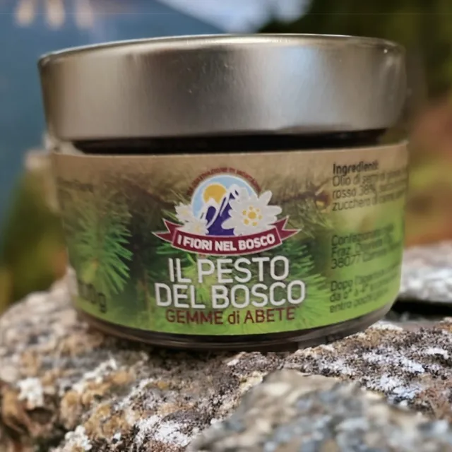
Gemme di abeteMolto particolare per la sua cremosità: per condire la pasta o con del pane croccante, per un aperitivo diverso.
6,00 €
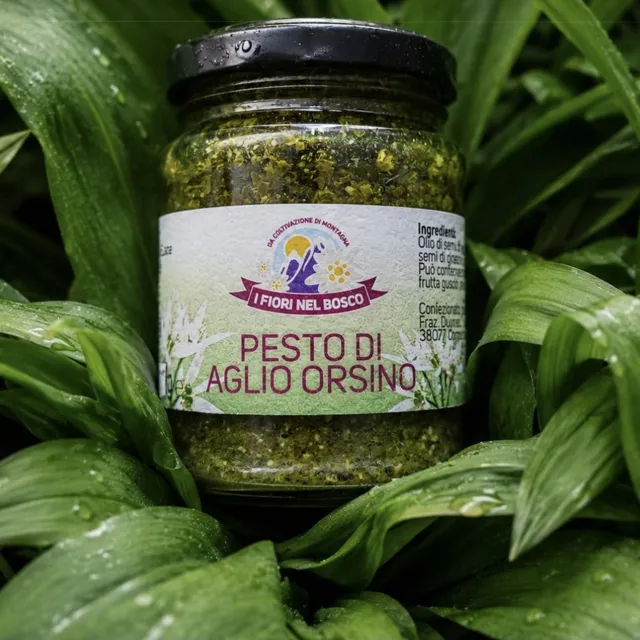
Aglio orsinoGusto deciso ma delicato: per condire la pasta o spalmato su una bruschetta croccante.
Ingredienti. olio di semi di girasole, aglio orsino, succo di limone, sale fino
5,50 € 85 g
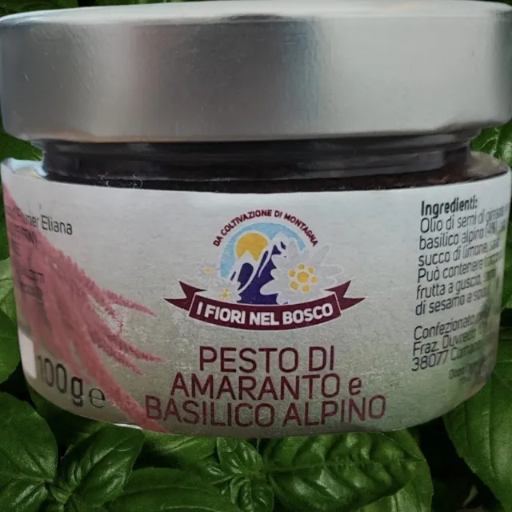
Amaranto e basilico alpinoMolto profumato: la croccantezza dei semi di amaranto con l'aroma intenso del basilico alpino.
6,00 €
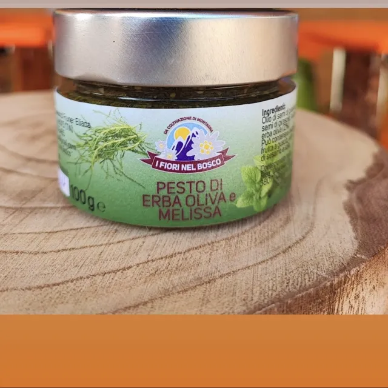
Erba oliva e melissaLa freschezza della melissa incontra l'intensità aromatica dell'erba oliva.
6,00 €
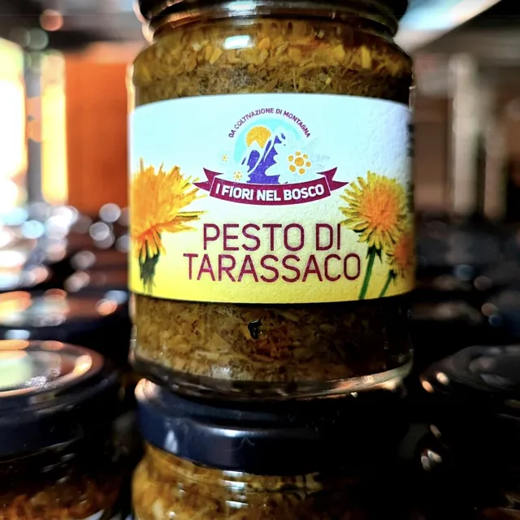
TarassacoFatto con foglie fresche di tarassaco: per primi piatti, bruschette e abbinamenti in cucina.
5,50 €
Il dolce della cipolla con le note speziate della santoreggia: sul pane come una bruschetta, o con formaggi freschi.
5,50 €
sale marino fino e le nostre erbe
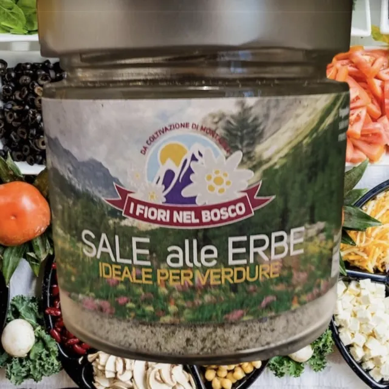
ErbePer condire verdure cotte o crude.
Ingredienti. sale marino fino, salvia, menta, timo, levistico (sedano di monte)
4,00 € 130 g
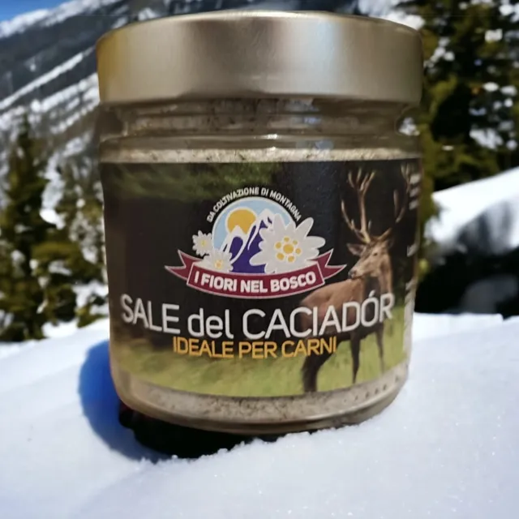
Rosmarino, salvia, origanoPer carni rosse, arrosti e patate al forno.
Ingredienti. sale marino fino, rosmarino, salvia, origano
4,00 € 130 g
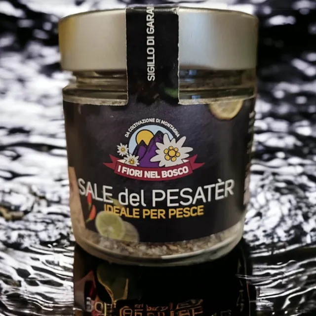
Melissa, basilico, mentaPer pesce e carni bianche.
Ingredienti. sale marino fino, melissa, basilico, menta
4,00 € 130 g
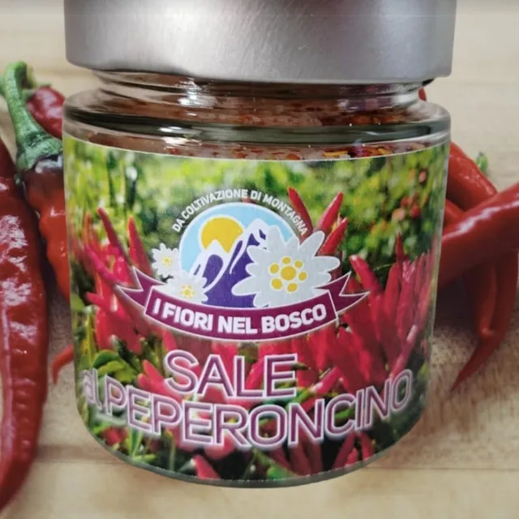
PeperoncinoPer tutti i piatti: piccantezza media, adatta a tutti.
Ingredienti. sale marino fino, peperoncino essiccato
4,00 €
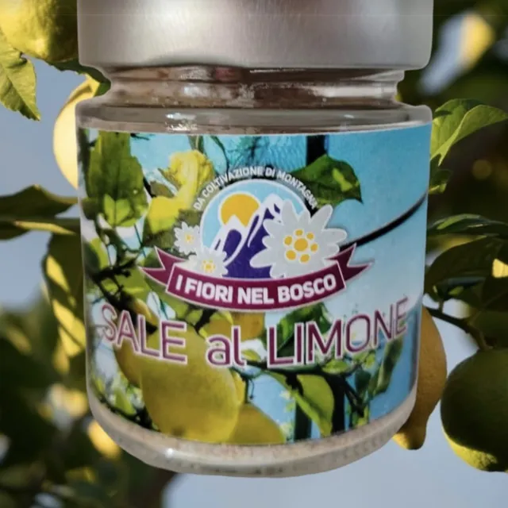
LimonePer verdure, pesce e carni bianche: la freschezza del limone.
Ingredienti. sale marino fino, limone essiccato
4,00 €
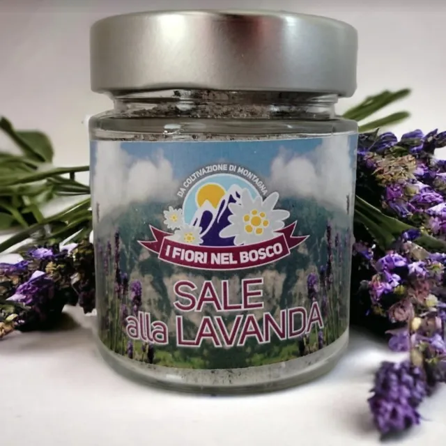
LavandaPer tutti i piatti: profumo intenso e gusto delicato.
Ingredienti. sale marino fino, lavanda essiccata
4,00 € 130 g
per la cucina di tutti i giorni
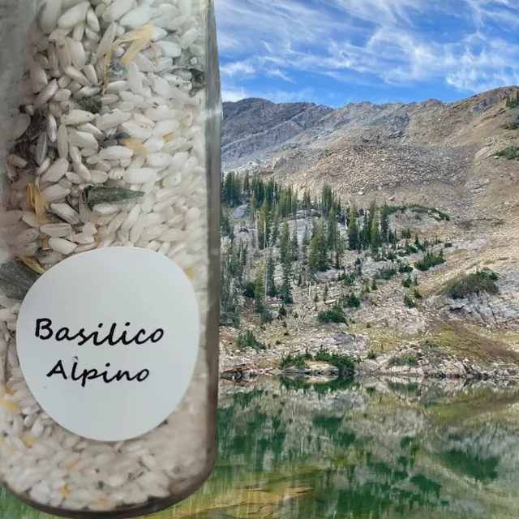
Basilico alpinoGusto molto fresco, quasi glaciale. Nel riso c'è una bustina con l'erba essiccata: si aggiunge in mantecatura, a riso cotto.
Ingredienti. riso carnaroli, basilico alpino essiccato, petali di calendula
7,00 € 355 g, per 4
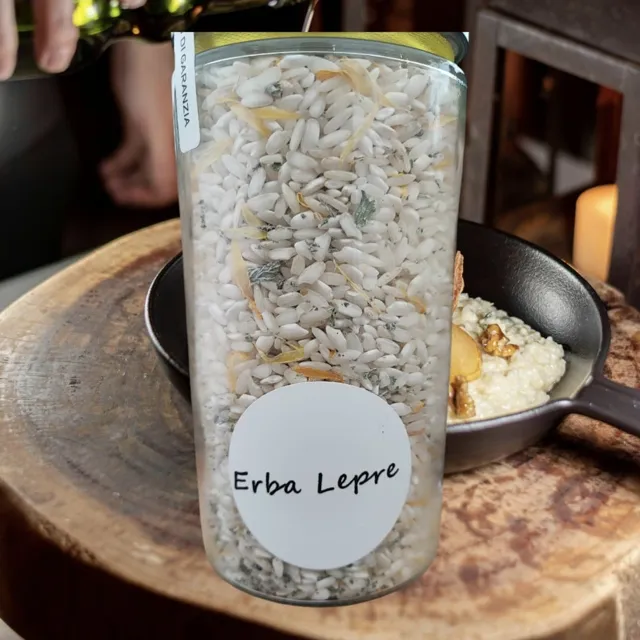
Erba lepreSentore speziato, quasi pepato: ideale con la salamella. L'erba si aggiunge in mantecatura.
Ingredienti. riso carnaroli, erba lepre essiccata, petali di calendula
7,00 € 355 g, per 4
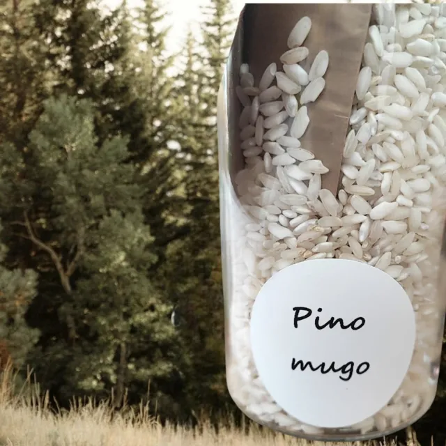
Pino mugoProfumo di bosco balsamico, leggermente dolce: con salsiccia o formaggio. Le gemme si aggiungono in mantecatura.
Ingredienti. riso carnaroli, gemme di pino mugo essiccate
7,00 € 355 g, per 4
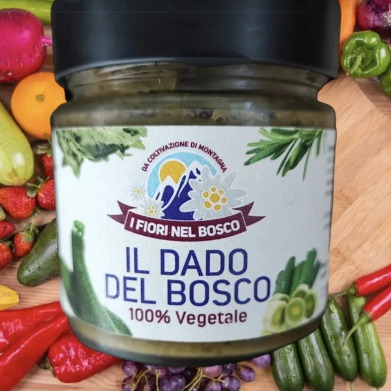
Il dado del boscoSenza glutammato: per brodi o per insaporire arrosti, carni e patate al forno.
6,50 €
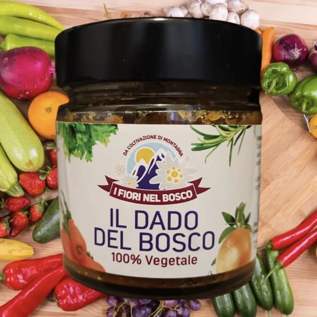
Il dado del boscoSenza glutammato. Un cucchiaio nella pentola quando bolle; per arrosti e patate, 1 o 2 cucchiai a metà cottura.
Ingredienti. carote, cipolle, sale, levistico (sedano di monte), salvia, rosmarino
6,50 € 230 g
Per dare un tocco vivace e forte ai piatti.
Ingredienti. peperoncino essiccato
5,00 € 10 g
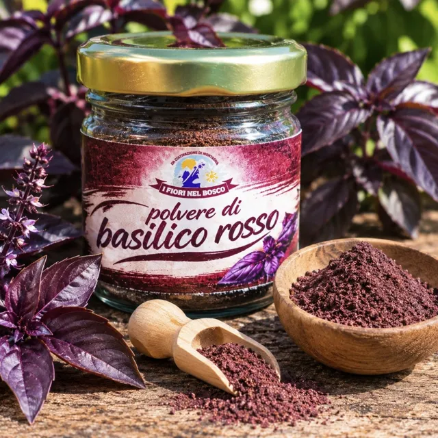
Basilico rossoPiù intenso e profumato del basilico comune: per risotti, pasta, insalate e pane.
Ingredienti. basilico rosso essiccato
5,00 € 10 g
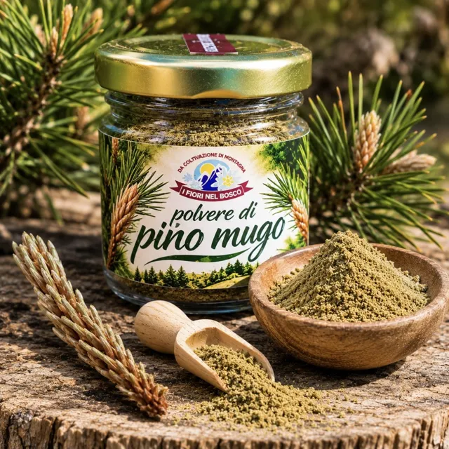
Pino mugoPer risotti, pasta, insalate, tortelli burro e salvia, pesce e pane. Anche come tisana zero spreco: un pizzico in tazza, e si beve tutto.
Ingredienti. pino mugo essiccato
5,00 € 15 g
zucchero di canna grezzo BIO
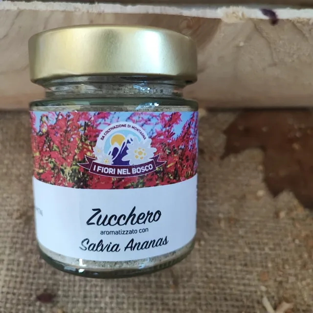
Salvia ananasZucchero di canna grezzo BIO: per tisane e tè, o per profumare i dolci.
Ingredienti. zucchero di canna grezzo BIO, salvia ananas essiccata
4,00 € 130 g
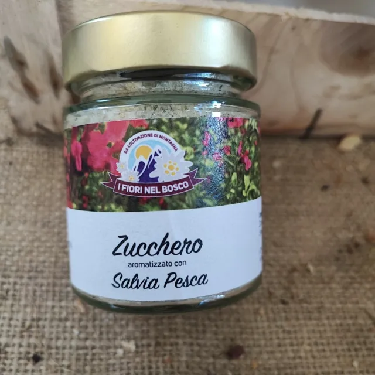
Salvia pescaZucchero di canna grezzo BIO: per tisane e tè, o per profumare i dolci.
Ingredienti. zucchero di canna grezzo BIO, salvia pesca essiccata
4,00 € 130 g
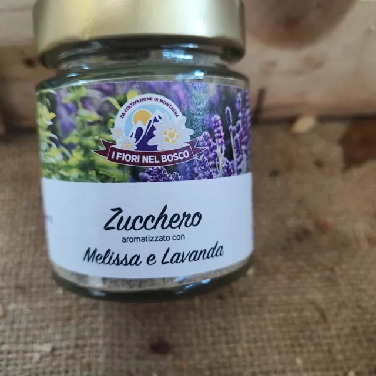
Melissa e lavandaZucchero di canna grezzo BIO: per tisane e tè, o per profumare i dolci.
Ingredienti. zucchero di canna grezzo BIO, melissa e lavanda essiccate
4,00 € 130 g
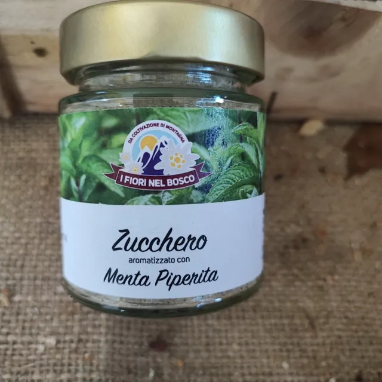
Menta piperitaZucchero di canna grezzo BIO: per tisane e tè, o per profumare i dolci.
Ingredienti. zucchero di canna grezzo BIO, menta piperita essiccata
4,00 € 130 g
solo per maggiorenni
Le grappe si vendono solo a chi ha compiuto 18 anni: nel messaggio d'ordine lo confermi tu.
Forte e decisa, dal sapore di montagna.
14,00 €
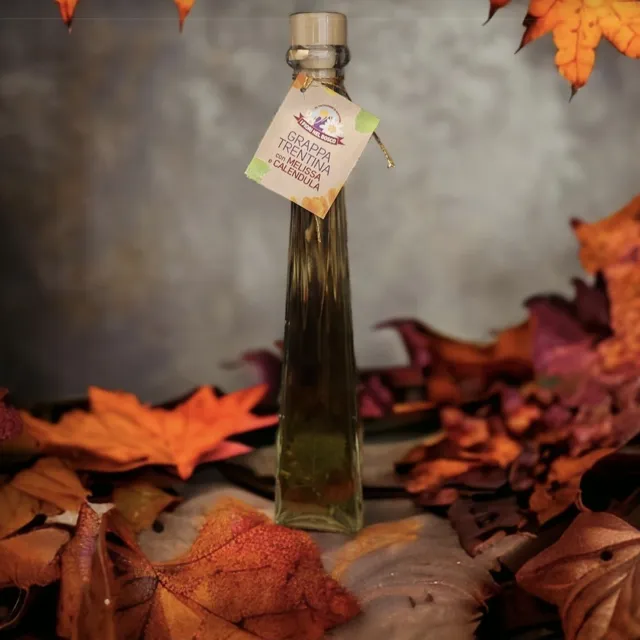
Melissa e calendulaUn gusto molto delicato e leggero.
14,00 €
Leggera e delicata, con un profumo limonato quasi come il bergamotto.
14,00 €
Con sentori profumati di bosco.
14,00 €
le caramelle trentine e la tazza da escursione
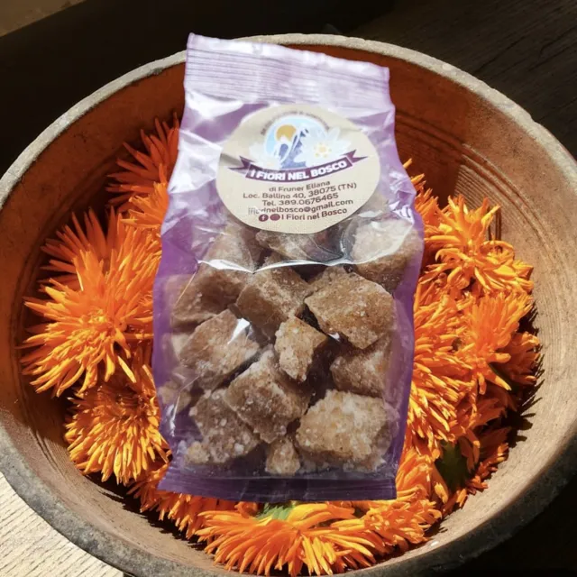
CalendulaLe classiche caramelle trentine: da mangiare così o da sciogliere nelle bevande calde al posto dello zucchero. Con una nostra tisana.
4,00 €
Con il nostro logo e un moschettone che fa da manico, per appenderla allo zaino.
8,00 €
Carrello vuotoTocca «Aggiungi» sotto un prodotto
Totale prodotti0,00 €
Le spese di spedizione te le diciamo su WhatsApp. Nel messaggio aggiungi nome e indirizzo.
Manda l'ordine su WhatsApp